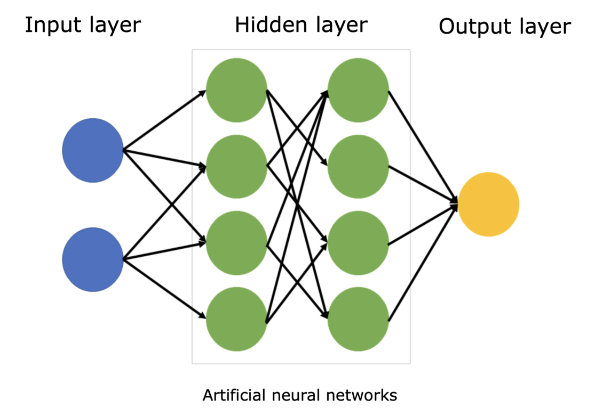
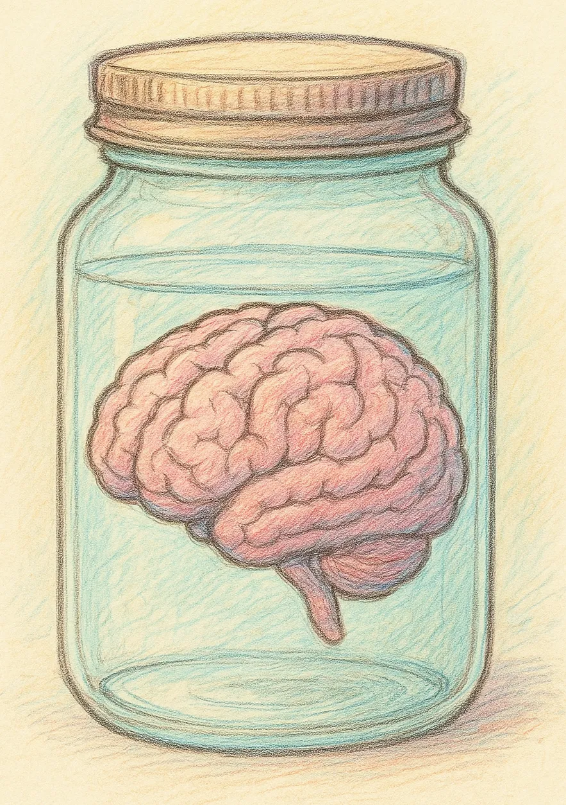
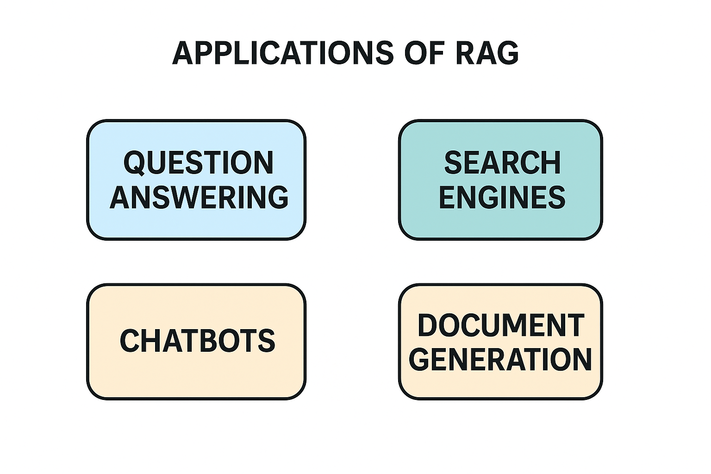

Nucleus Software · MasterClass
Building a RAG-Powered Financial Bot
with LLMs
with LLMs
Production-Grade AI Chatbot Using LLMs, Vector Databases & Web Scraping
3 Hours · Live Virtual Labs
7th April 2025 · 3:00–6:00 PM IST
Shivam Patel
Instructor
The Goal
Build a working Financial Bot from scratch — no pre-built templates, no guided walkthroughs.
Live hands-on virtual labs. By 6 PM, every participant ships a working Financial Bot — and the RAG skills to build the next one.
Technical Specializations
- Agentic AI & LLM Workflows
- Machine Learning & Generative AI
- RAG, NLP, Open Domain QA
- Privacy-Preserving ML
- Neural Architecture Search
Experience
Universities & Research
CMU
MIT
Cambridge
Caltech
Mila
Instructor Introduction
Shivam Patel
Sr. ML Engineer @ Apple | Formerly @ Google, CMU, MIT, Caltech, Mila, Cambridge
Career Highlights
- At Apple, improving retrieval & ranking models for RAG systems and agentic workflows powering Siri & LLMs
- At Google (3.5 yrs), built large-scale recommendation systems, neural architecture search, privacy-preserving ML, LLM-based feature engineering
- At Adobe, developed transformer-based multi-modal architectures for text-based video object segmentation
- 2 US Patents — text-based video object selection & AI-blockchain recruitment
Academic & Teaching
- Instructor @ Acceler — ML, DL, GenAI, production Python
- Trained 3000+ working professionals in ML, GenAI & Agentic AI
- Visiting Researcher at Mila under Turing Laureate Prof Yoshua Bengio
- Visiting Research Student at Cambridge (Centre for Existential Risk)
Education
- MS, Computer Science — Carnegie Mellon University
- Research collaborations: MIT, Caltech, Stanford, Harvard
- Erdos Number 2 · Microsoft Global Hackathon Winner
Welcome to today’s class! Before we begin,
Pop Into The Chat:
👤 Your Name
👷 Your Role
🏠 Your Location
Optimise Your Experience
01
Be Vocal
Interact with your instructor via the live class.
02
Be Confident
Don’t be shy to speak up and get clarifications!
03
Be Active
Use your resources, solve assignments & MCQs. It’s your experience — what you put in is what you’ll get out.
Don’t worry!
We are here to help
at your every step!
We are here to help
at your every step!
Learn these success hacks
- • Attend every session
- • Be attentive in the class
- • Participate in the class activities and demos
- • Actively advocate for yourself
- • Consistency is the key
- • Be patient with yourself!
Icebreaker
“One fintech problem you wish AI could solve in your current role”
Share with the room — we’ll see how many of these our bot can tackle by 6 PM.
Today’s Journey
Four parts. One working bot. Zero hand-holding.
1
35 min
RAG Fundamentals
Architecture, embeddings, ChromaDB — the mental model before you code.
→
2
35 min
Build the Data Pipeline
Scrape, chunk, embed, and ingest into ChromaDB.
→
3
35 min
Connect LLM & Build Bot
Wire RAG chain to GPT-4o-mini, launch Gradio UI, test live.
→
4
20 min
Production Pitfalls
Tuning, scaling, and the calls that ship production RAG.
Technology Stack
Everything you’ll use today
🕸
BeautifulSoup
Web scraping & HTML parsing
🧠
OpenAI Embeddings
text-embedding-ada-002
💾
ChromaDB
Vector database for RAG
⛓
LangChain
Orchestration framework
🤖
GPT-4o-mini
LLM for response generation
🎨
Gradio
Chat interface UI
🐍
Python 3.10+
Runtime environment
🕸
RetrievalQA
LangChain RAG chain
Before We Dive In
Virtual Lab Access & Login
Let’s take a quick moment to ensure everyone is set up properly. Your Virtual Lab access is essential for the hands-on work today. Shivam will walk through the login live.
- Is your Nuvepro VM running?
- Have you signed in with your provided email credentials on Chrome?
- Can you access the tools inside the lab environment?
- Google Colab notebook ready to open
All green? Shivam begins Part 1.
Part 1 · 35 Minutes
RAG Fundamentals & System Architecture
Hallucination vs grounded answers, the RAG pipeline, and a ChromaDB walkthrough — before we write a line of code.
The Evolution
From rule-based bots to LLM-powered intelligence

Rule-Based Chatbots
If-else logic. Can’t handle ambiguity. Every new pattern = new rule. Doesn’t scale.
ML / Deep Learning Models
Neural networks learn patterns. Better at ambiguity. But need custom training data for each task.
LLM-Powered (Today)
Pre-trained on massive data. Understands natural language. Add domain knowledge via RAG — no re-training needed.

The Problem in 2026
GPT-5 knows almost everything public.
It still doesn’t know your customer’s EMI today.
It still doesn’t know your customer’s EMI today.
Frontier models have closed most reasoning gaps. What they still can’t do: access your private data, cite a source a compliance officer will accept, or reflect a number that changed this morning. For a financial bot, that’s the whole job.
Gap 1 · Freshness
Training data is frozen.
RBI changed the repo rate this morning. The model doesn’t know. And it won’t tell you it doesn’t know.
Gap 2 · Private Data
Your data isn’t in the weights.
Product circulars, internal policy, customer ledgers — none of it was in pre-training, and none of it should be.
Gap 3 · Citations
Compliance needs a source.
“The model said so” doesn’t survive an audit. Every answer needs a link a human can verify.
The shift: in 2026, the bottleneck isn’t how smart the model is — it’s how well you feed it your data. That’s what RAG solves.
Demo
Same question. Two very different answers.
Without RAG — Pure LLM
“What is the current SBI home loan interest rate?”
The current SBI home loan interest rate is 8.40% - 9.15% p.a. for salaried individuals. For self-employed borrowers, the rate starts at 8.65% p.a. The processing fee is typically 0.35% of the loan amount…
Confident. Specific. Completely made up.
The model has no access to current data. These numbers are hallucinated from training data that may be months or years old.
With RAG — Retrieved Context
“What is the current SBI home loan interest rate?”
Based on the retrieved data from SBI’s website (scraped today): SBI home loan rates currently start at 8.50% p.a. under their “Regular Home Loan” scheme. Rates vary by loan amount and CIBIL score.
Source: homeloans.sbi/products/view/home-loan
Source: homeloans.sbi/products/view/home-loan
Grounded. Cited. Verifiable.
The answer comes from real, retrieved documents. The source is cited. The user can verify.
The Solution
Retrieval-Augmented Generation (RAG)
Step 1
Website
Live financial data sources
→
Step 2
BeautifulSoup
Scrape & clean HTML
→
Step 3
Embeddings
Text → vectors
→
Step 4
ChromaDB
Store & index vectors
→
Step 5
LangChain RAG
Retrieve & augment prompt
→
Step 6
GPT-4o-mini
Generate grounded answer
→
Output
Gradio UI
User-facing chat
RAG Architecture — Detailed View
The 5-step retrieval pipeline you’ll build today

1 — Prompt + Query enters
2 — Query searches knowledge sources
3 — Relevant context retrieved
4 — Enhanced context sent to LLM
5 — Grounded response generated
How RAG Works
The retrieval-generation cycle
Query
User asks a financial question in natural language
Retrieve
ChromaDB finds the k most relevant document chunks via vector similarity
Augment
Retrieved docs are injected into the prompt template as
{context}Generate
GPT-4o-mini synthesizes an answer grounded in the retrieved context
Answer
Cited, verifiable response delivered to the user via Streamlit
RAG vs Pure LLM
Why RAG wins for financial queries
User
“What are the latest RBI repo rate changes and how do they affect my home loan EMI?”
LLM (no RAG)
“The RBI repo rate is 6.5% …” — confidently outdated.
Problem
Knowledge Cutoff
LLMs are frozen in time. Financial data changes daily — interest rates, guidelines, market data.
Problem
Hallucination
Without grounding, LLMs fabricate numbers, cite non-existent policies, and sound confident doing it.
Solution
RAG = Grounded Answers
Retrieve real documents, inject into prompt, generate answers with cited context. Traceable and accurate.
Choosing Your Approach
Where does each approach fit?
Static Knowledge
Knowledge Freshness →
Live / Dynamic Data
High customization · Static data
Fine-Tuning
Train on domain-specific data. Expensive and can’t update without re-training.
Today’s Focus
High customization · Live data
RAG
Retrieve fresh domain data and ground LLM responses in it. The sweet spot for fintech Q&A.
Low customization · Static data
Pure LLM
Off-the-shelf GPT/Claude. Good for general tasks. Fails on domain-specific or current data.
Low customization · Live data
API + Tools Only
Direct API calls. Simple and fast, but no domain knowledge or retrieval.
Core Concept
Embeddings — turning text into vectors
An embedding is a high-dimensional numerical representation of text. Similar meanings → similar vectors → similarity search.
Model: OpenAI text-embedding-ada-002
Dimension: 1536 floats per chunk
Dimension: 1536 floats per chunk
“home loan interest rate” and “housing mortgage APR” produce nearby vectors even though the words differ.
# What an embedding looks like
from langchain_community.embeddings import OpenAIEmbeddings
embed = OpenAIEmbeddings()
vector = embed.embed_query("home loan rate")
# vector = [0.0023, -0.0142, 0.0391, ...]
# Length: 1536 dimensions
Vector Database
ChromaDB — store, index, retrieve
Collections
Group documents by topic or source. Each collection stores vectors + metadata + original text.
Similarity Search
Query with natural language → get the k most relevant documents. Fast cosine similarity under the hood.
Why Chroma?
Lightweight, Python-native, zero config. Perfect for dev and small production. We’ll discuss alternatives in Production Pitfalls.
# ChromaDB similarity search
from langchain_community.vectorstores import Chroma
results = vectorstore.similarity_search(
"home loan interest rate",
k=3
)
for doc in results:
print(doc.page_content[:100])
print(doc.metadata)
Orchestration
LangChain — the glue connecting everything
LangChain connects the scraper → embedder → retriever → LLM in a unified chain. These are the key imports you’ll use:
from langchain_openai import ChatOpenAI # LLM wrapper
from langchain_openai import OpenAIEmbeddings # Embedding model
from langchain.vectorstores import Chroma # Vector DB
from langchain.text_splitter import RecursiveCharacterTextSplitter
from langchain_core.prompts import ChatPromptTemplate # Prompt template
from langchain.chains.combine_documents import create_stuff_documents_chain
from langchain.chains import create_retrieval_chain # RAG chain
from langchain_community.document_loaders import WebBaseLoader
Open the notebook now
Find where each import connects in
Financial_Bot_with_LLMs.ipynb — no running code yet, just anatomy.Part 2 · 35 Minutes
Build the Data Pipeline
Scrape, clean, chunk, embed, and persist a live vector store — hands on VMs.
Part 2 · Step 1
Web Scraping — extract financial data
What you’re doing:
- Parse Zerodha Varsity sitemap for financial URLs
- Load pages with LangChain’s WebBaseLoader
- Auto-extract text content from HTML
- Store as LangChain Document objects
10 minutes. Run the loader cells. Inspect
docs[0].page_content. Notice the raw text — that’s why chunking matters.
# Parse sitemap for URLs
from bs4 import BeautifulSoup
from urllib.request import Request, urlopen
url = "https://zerodha.com/varsity/
chapter-sitemap2.xml"
xml = get_sitemap(url)
urls = get_urls(xml)
# Load pages into Documents
from langchain_community.document_loaders \
import WebBaseLoader
docs = []
for url in urls:
loader = WebBaseLoader(url)
docs.extend(loader.load())
Part 2 · Step 2
Chunking — why size matters
Raw scraped text is too long for embeddings. We split into overlapping chunks that preserve context.
chunk_size = 1000 — In characters, not tokens. Gives each chunk enough context for financial Q&A without exceeding embedding limits.
chunk_overlap = 200 — 20% overlap prevents context loss at boundaries. Sentences that straddle splits stay intact in at least one chunk.
5 minutes. Inspect the first 3 chunks — each should be a coherent financial snippet.
from langchain.text_splitter import \
RecursiveCharacterTextSplitter
text_splitter = RecursiveCharacterTextSplitter(
chunk_size=1000, # in characters
chunk_overlap=200 # in characters
)
splits = text_splitter.split_documents(docs)
print(f"len(docs): {len(docs)}")
print(f"len(splits): {len(splits)}")
Part 2 · Step 3
Embed & Ingest into ChromaDB
Convert the Zerodha Varsity chunks to vectors with OpenAI’s embedding model, then store everything in ChromaDB.
After this step, you have a populated vector database of Indian personal-finance content sitting on your Virtual Lab — indexed for cosine similarity search.
10 minutes. Watch the embeddings being created. Inspect a single vector — 1536 dimensions of meaning.
from langchain_openai import OpenAIEmbeddings
from langchain_chroma import Chroma
embeddings = OpenAIEmbeddings()
vectorstore = Chroma.from_documents(
documents=splits,
embedding=embeddings
)
retriever = vectorstore.as_retriever(
search_kwargs={"k": 4}
)
print(embeddings.model)
# text-embedding-ada-002 · 1536-dim
Part 2 · Step 4
Verify — does it actually work?
# Retrieval sanity check
query = "What is an index fund?"
results = vectorstore.similarity_search(query)
for i, doc in enumerate(results):
print(f"--- Chunk {i+1} ---")
print(doc.metadata["source"])
print(doc.page_content[:200])
What you should see:
4 relevant chunks returned from Zerodha Varsity pages on index funds
Metadata with the Varsity source URL for each chunk
Content directly explaining what an index fund is
DB confirmed. You’re ready for Part 3.
Part 3 · 35 Minutes
Connect the LLM & Build the Financial Bot
RetrievalQA, prompt engineering, end-to-end query flow, and a live Gradio UI running on your VM.
Part 3 · Step 1
LLM Setup — GPT-4o-mini
Configure the language model for Zerodha Varsity Q&A — deterministic, grounded, and cheap to run on every query:
temperature = 0.0
Deterministic for factual Q&A. The retriever supplies the facts — the LLM just needs to phrase them faithfully.
model = gpt-4o-mini
Fast, cheap, capable enough for RAG. The retriever does the heavy lifting — the LLM synthesizes.
from langchain_openai import ChatOpenAI
llm = ChatOpenAI(
model="gpt-4o-mini",
temperature=0.0
)
# Quick smoke test
response = llm.invoke(
"What is a mutual fund?"
)
print(response.content)
Part 3 · Step 2
Prompt Template — structure matters
from langchain_core.prompts import \
ChatPromptTemplate
system_prompt = (
"You are a knowledgeable financial "
"assistant specialised in Indian "
"personal finance, mutual funds, "
"equity markets, and investment "
"concepts — your knowledge base is "
"Zerodha Varsity.\n\n"
"Rules:\n"
"• Use ONLY the retrieved context.\n"
"• If the answer is not in context, "
" say you don't have enough info.\n"
"• Keep answers 3–5 sentences.\n"
"• Cite the key concept / source.\n"
"• Ask a clarifying question if the "
" query is ambiguous.\n\n"
"{context}"
)
prompt = ChatPromptTemplate.from_messages([
("system", system_prompt),
("human", "{input}"),
])
Why this prompt works:
Scoped persona: Indian personal finance + Zerodha Varsity — narrows the LLM to our domain.
Grounded by rule: “Use ONLY the retrieved context” — explicit refusal when the answer isn’t present.
Length & citation: 3–5 sentences, cite the concept — production-ready out of the box.
{context} is populated at runtime with the top-k Varsity chunks from ChromaDB; {input} is the user question.
Part 3 · Step 3
The RAG Chain — connecting it all
from langchain.chains.combine_documents \
import create_stuff_documents_chain
from langchain.chains \
import create_retrieval_chain
# Step 1: stuff docs into prompt
question_answer_chain = \
create_stuff_documents_chain(llm, prompt)
# Step 2: connect retriever
rag_chain = create_retrieval_chain(
retriever, question_answer_chain
)
# Test it on Varsity content
response = rag_chain.invoke({
"input": "What is an index fund?"
})
print(response["answer"])
for doc in response["context"]:
print(doc.metadata["source"])
This is the moment of truth.
Two chains work together:
- 1.
create_stuff_documents_chain— formats retrieved docs into the prompt - 2.
create_retrieval_chain— connects retriever to the QA chain - 3. Result has
response["answer"]+response["context"]
“What is index fund?” → grounded answer from Zerodha Varsity content
Part 3 · Step 4
Gradio Chat UI — ship it
import gradio as gr
from langchain_core.messages import \
AIMessage, HumanMessage
def predict(question, history):
lc_history = []
for user_msg, bot_msg in history:
lc_history.append(HumanMessage(content=user_msg))
lc_history.append(AIMessage(content=bot_msg))
result = rag_chain.invoke({
"input": question,
"chat_history": lc_history
})
return result["answer"]
demo = gr.ChatInterface(
fn=predict,
title="Zerodha Varsity Financial Bot",
theme=gr.themes.Soft(),
examples=EXAMPLES,
)
demo.launch(share=True)
Gradio gives you a chat interface with history in ~15 lines — running right inside Colab with a public share URL.
Bonus: Chat history is built in — Gradio handles the tuple format, we convert to LangChain messages.
Try these Varsity-grounded queries:
“What is an index fund and how does it differ from an actively managed fund?”
“How does a SIP work, and what is NAV?”
“What are ELSS funds and their tax benefits under 80C?”
Test Your Bot
Zerodha Varsity queries to evaluate
R
Concept
“What is an index fund and how does it differ from an actively managed fund?”
R
Mechanics
“How does a Systematic Investment Plan (SIP) work?”
R
Definition
“What is NAV in mutual funds and how is it calculated?”
R
Comparison
“What is the difference between large-cap, mid-cap, and small-cap funds?”
R
Tax & Regulation
“What are ELSS funds and what tax benefits do they offer under Section 80C?”
R
Multi-turn
“What are examples of it?” — follow-up after an index-fund question; history resolves “it”
Evaluate each response for: accuracy, hallucination, and whether context was cited.
Part 4 · 20 Minutes
Production Considerations & Pitfalls
Tuning, scaling, failure modes — the calls that separate a demo from a deployment.
Production Pitfalls
The 6 decisions that matter at scale
#1
Chunk Size
Wrong: chunk_size=500 everywhere
Right: 200-300 for Q&A, 800-1000 for summaries. Wrong size = retrieval that looks right but misses context.
#2
Embedding Model Swap
Wrong: Switch to cheaper model later
Right: Embedding model and chunk size are coupled. Change one = re-embed everything. Silent degradation.
#3
k in Similarity Search
Wrong: k=3 because the tutorial said so
Right: k is a latency vs recall dial. Low k = fast, may miss. High k = noise confuses the LLM.
#4
Temperature for Finance
Wrong: temperature=0 for “deterministic”
Right: 0 kills useful paraphrasing. 0.2-0.3 is the production sweet spot: accurate without being brittle.
#5
When RAG Fails Silently
Wrong: “RAG always works if data is good”
Right: Fails when chunks miss the answer, retrieval returns wrong docs, or LLM ignores context. Each needs a different fix.
#6
ChromaDB in Production
Wrong: “We’ll migrate later”
Right: Migrate before millions of docs. pgvector for Postgres. Pinecone for sub-10ms. ChromaDB = dev only.
Every one of these failures is invisible until production. The time to decide is now.
Recap
What you walk away with

🤖
Working Financial Bot
Running on your Virtual Lab, queryable with real financial questions right now.
💾
Populated ChromaDB
Vector database with scraped financial data you built and ingested yourself.
⛓
LangChain RAG Chain
Full retrieval pipeline connecting ChromaDB to GPT-4o-mini — code you wrote.
🎨
Gradio Chat Interface
Demo-ready chat UI with conversation history, running in Colab.
🔧
Production Playbook
Chunking, top-k, temperature, and scaling trade-offs — the calls that separate demos from deployments.
🧠
Architecture Mental Model
The framework to extend: new data sources, new tools, new LLMs.
Reflection
Which component of the bot surprised you most?
Where would you deploy this inside Nucleus Software first?